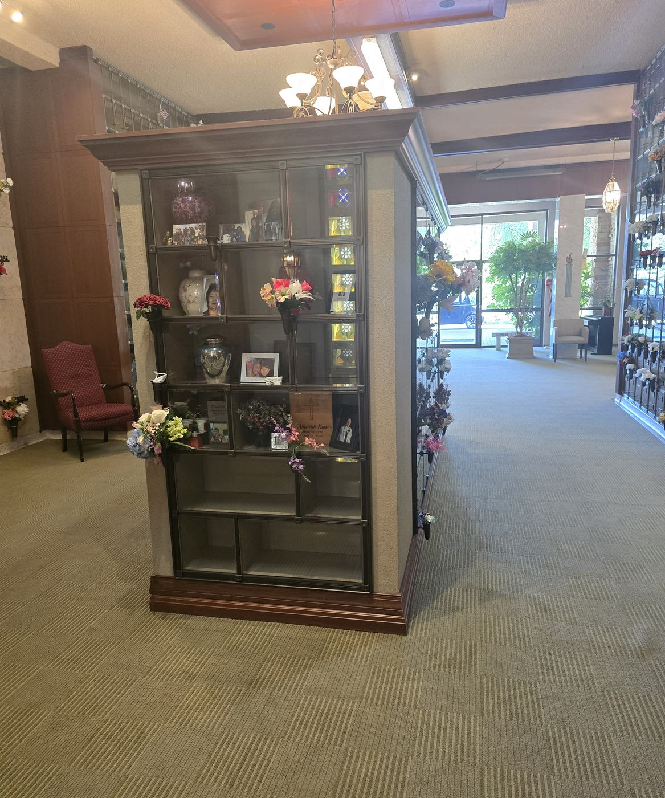
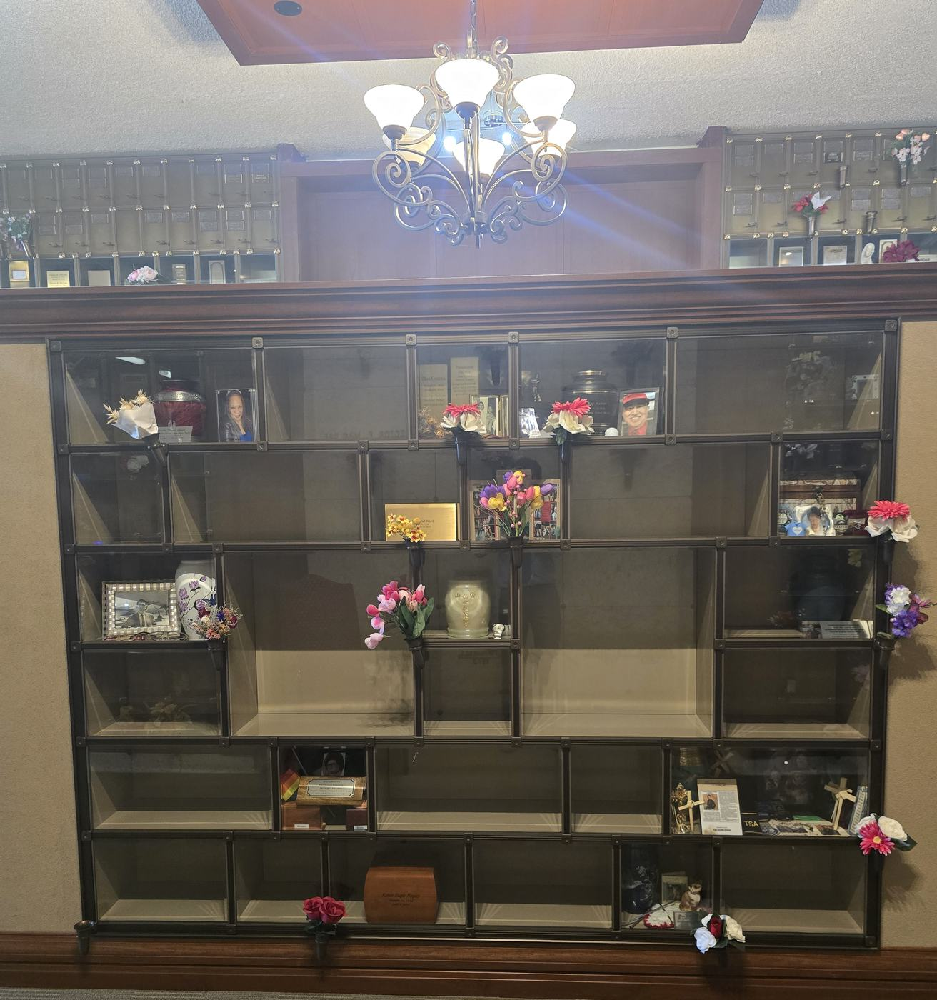

Eternal Light Columbarium
21
left
Eternal Light is a four-sided glass columbarium, indoors, in a lit corridor of the Eternal Light Mausoleum attached to the Chapel of Memories. Every niche is closed with glass, so the urn and whatever you set beside it stay in view. Every one carries 2 rights of interment, larger units included.
The Columbarium

Eternal Light is a freestanding glass-front columbarium, indoors. It's a four-sided case with a dark wooden cornice and base, standing on carpet in a lit corridor of the Eternal Light Mausoleum, which is attached to the Chapel of Memories. You can walk all the way around it. Every niche is closed with glass, so the urn and whatever you set beside it stay in view.
Every niche carries 2 rights of interment. That includes the larger multi-row units. The bigger openings give you more room to arrange things, not room for more people.
It's the most varied of our glass-front locations. The niches aren't a uniform grid. They run from single small openings up to tall units two rows high, and the prices follow.
Four Faces, Clear Corners

The columbarium has four faces: two broad elevations (south, and the front, which faces north) and two narrower ends (east, at the front door, and west). The corners are solid, so no niche is visible from two sides at once; a niche belongs to exactly one face.
| Face | Niches | What it is |
|---|---|---|
| South | 31 | A broad elevation, and the largest face. |
| Front (north) | 30 | The other broad elevation. |
| West | 12 | A narrow end. |
| East (front door) | 12 | The narrow end nearest the entrance. |
Open the Eternal Light niche map to turn the columbarium face by face and see the exact price and today’s status of any niche.
Choosing a Niche

An Eternal Light niche
A niche here is closed with glass and lit, so the urn and a photograph or keepsake beside it are part of the memorial. Size and height set the price.
The larger units
The tall two-row openings give a family a display rather than a shelf. They still carry two rights of interment, like every other niche here.
Full range across every niche currently for sale at Eternal Light: $10,995–$82,500.
What It Costs
Opening and closing, recording, endowment care and any inscription are charged in addition to the price of the space. They are straightforward, and they differ by location and by what you choose. Call or email me and I will put the exact figures in writing for you, with no obligation.
| Opening & closing, each inurnment | $875 |
| Recording fee, each | $235 |
| Endowment Care Fund | 10% |
| Inscription | none |
| Bronze scroll, optional | $785 |
| Vase with ring, optional | $370 |
| Sales tax, on the two optional bronzes only | 10.4% |
About these charges. These are Bonney Watson’s current charges for Eternal Light. Your family service director will confirm the current charges before quoting.
What Is Available Now
21 of the 85 niches at Eternal Light are for sale today. This is a finished columbarium in an established building rather than a brand-new one, so what's left is what's left. The sizes and heights still open aren't spread evenly across the four faces. If a particular face or height matters to you, ask early.
Open the Eternal Light niche map to see exactly which niches are still available.
Coming to See It
Open the Eternal Light niche map · Compare all the glass-front locations
Ranges in this guide are computed from the price and availability data behind our live niche maps and are re-checked against them automatically whenever this page changes. They describe what is currently offered for sale, and a range moves as spaces sell. The exact price of a specific niche, and today’s availability, are always the ones your family service director confirms for you.
BEFORE YOU COME OUT
Decide whether the urn should be visible. Everything else about a glass front follows from that one answer. Choose the urn with the niche, not after it. Behind glass, the urn is the thing people see. Decide whether you want either of the two optional bronzes, the scroll or the vase with ring. And ask early: there are 21 niches left here, and a particular face or height may not stay available.
Ranges here are computed from the price and availability data behind our live niche maps, so they describe what is offered for sale today and move as spaces sell. I confirm the exact niche, its price and today’s availability before anything is signed.
Ask before a face closes
Eternal Light is indoors and takes a few minutes to walk right around. Tell me the face and the height you have in mind, and I'll tell you what's open on it today, what it costs, and put it in writing with no obligation.
Martice Morrison · (206) 445-9794 · mmorrison@bonneywatson.com